WhiskedAway · Concept art · 17 October 2026
Cuddlecore Kitchen
A quiet refuge in a country inn. Rain on the window, steam above the pot, honeyed oak and dusty berry wool warmed by three candles and a brass lamp.
These 13 assets define the look for one Blender room. Wall views need a single consistent 3D layout. The two fabric images are texture candidates; seam cleanup is still required before production use.
The room
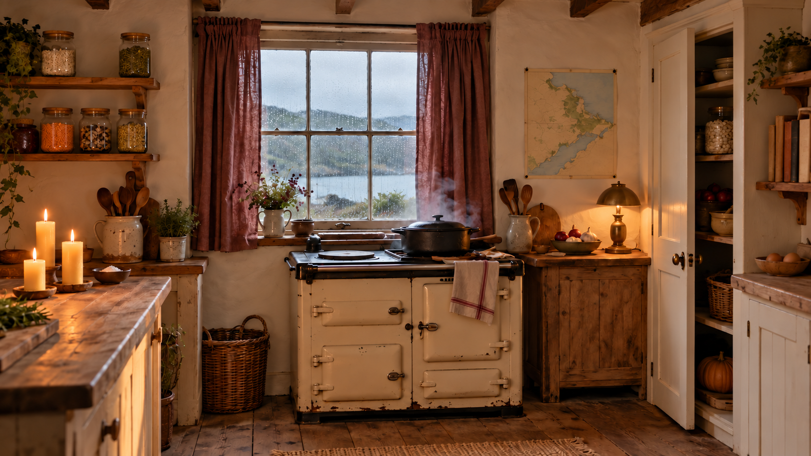

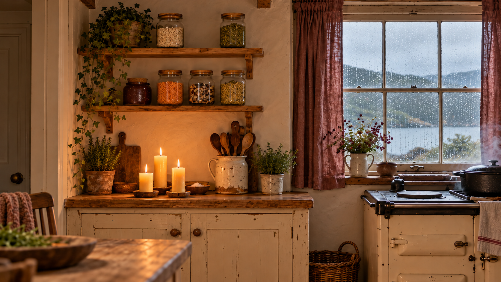

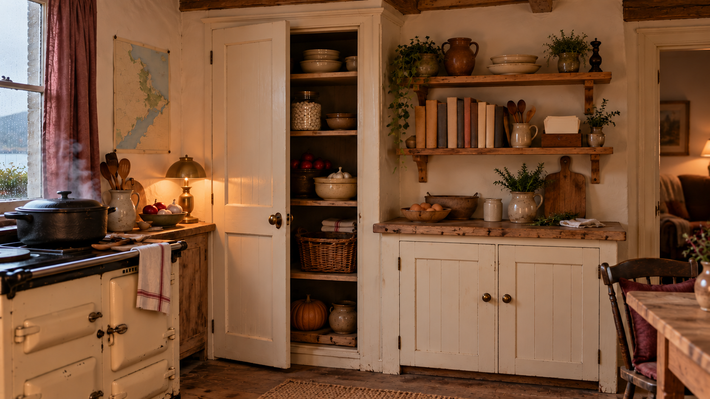

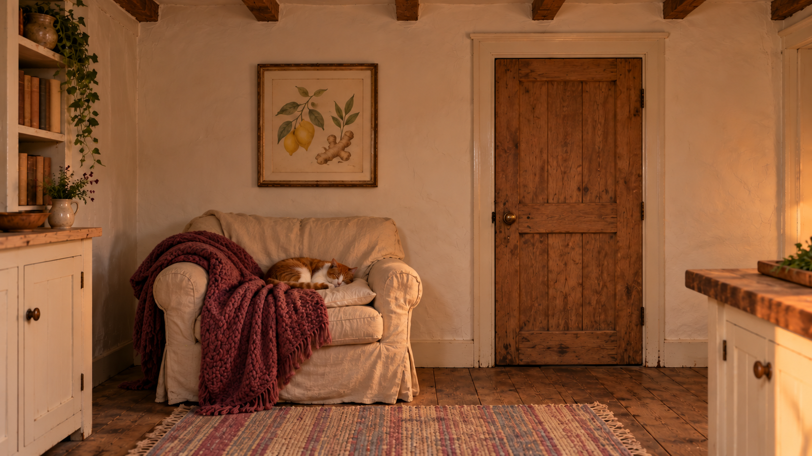

Object details
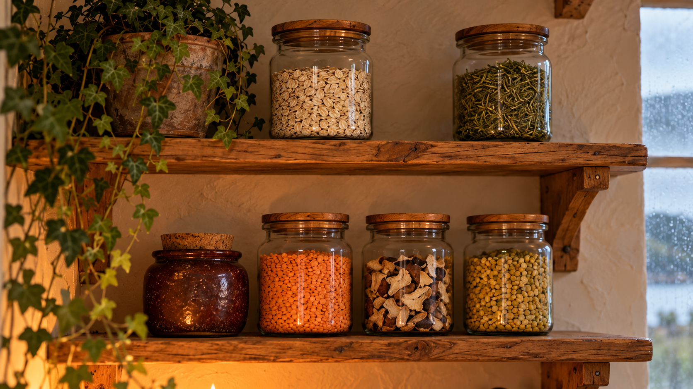

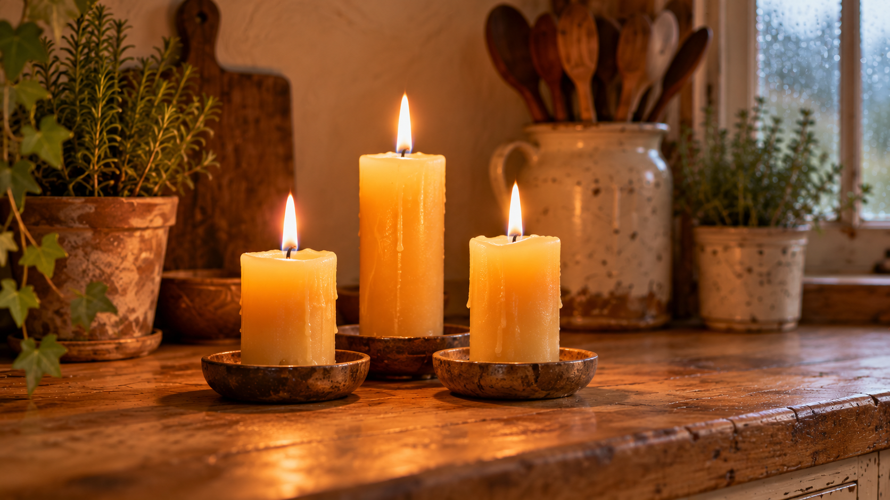

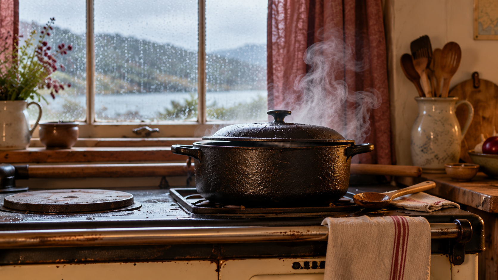

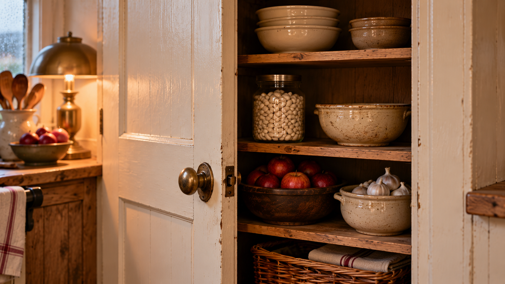

Materials
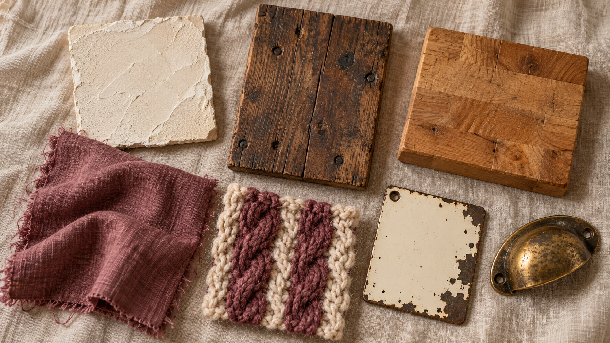

Flat artwork & texture candidates
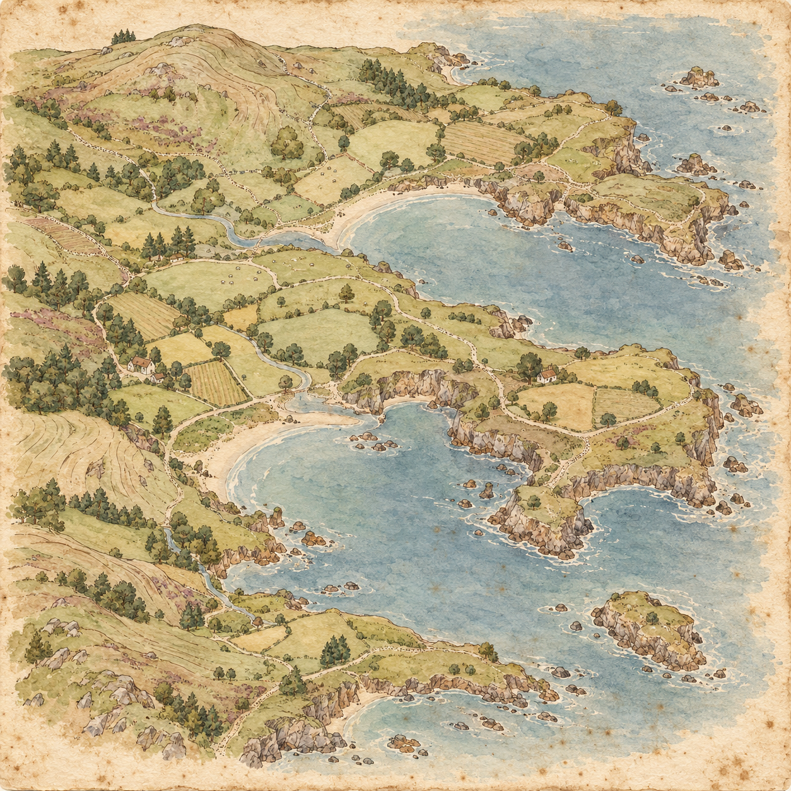

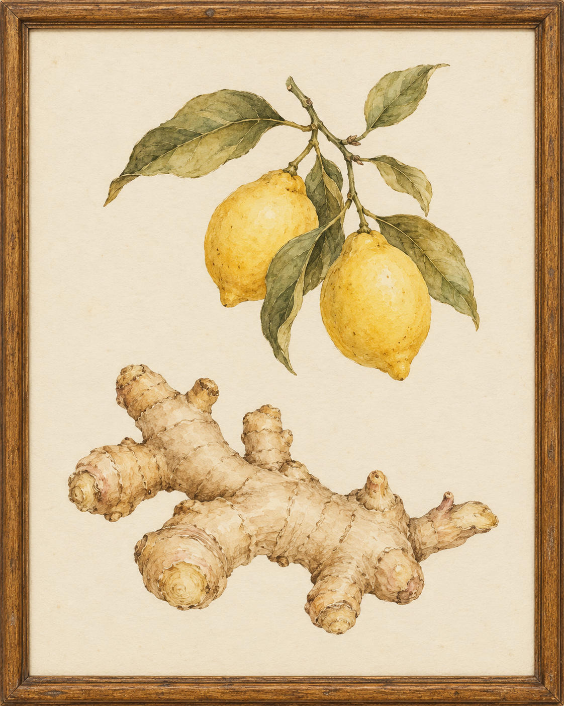

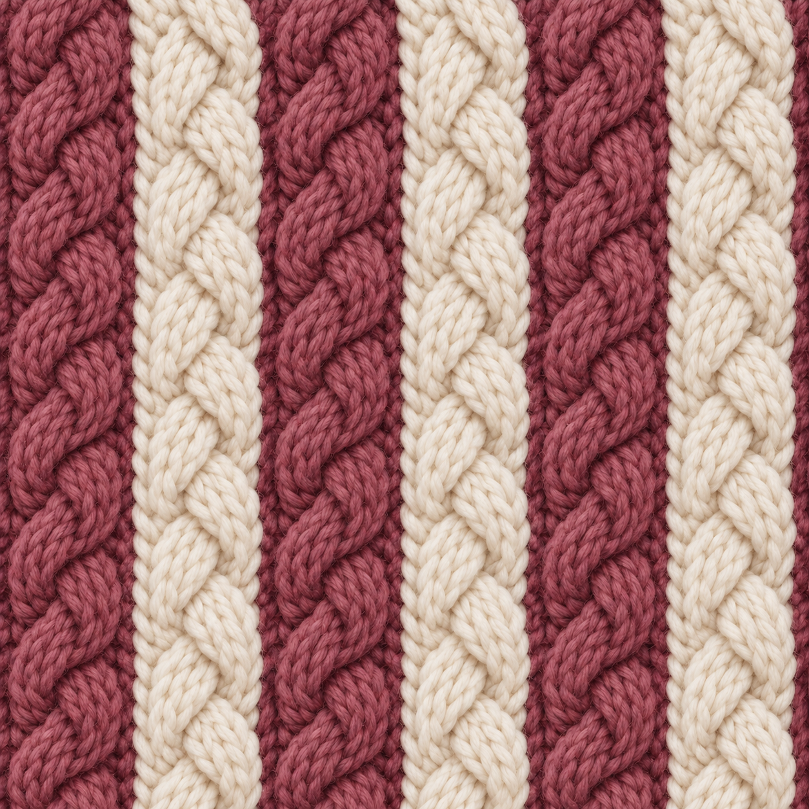

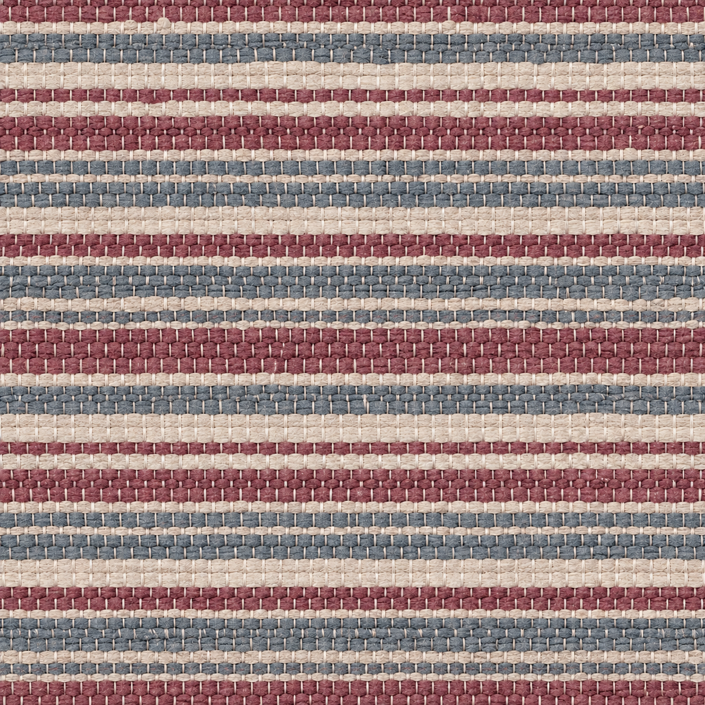

Repeat preview
Each panel repeats the same square. Inspect the horizontal and vertical joins while changing the scale. Generated texture edges are not verified seamless.